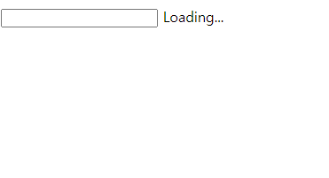

Case14 : Auto Complete 1
케이스 주제
(현업에서 서비스를 만들때 화장품을 검색하거나 영상을 검색할때 등에 사용할 검색 자동완성 기능을 요구하는 경우가 많이 있습니다. 사용자는 이 기능으로 내가 검색한 내용과 관련된 다른 검색어들을 알 수
있게 되어 사용자에게 정보 편의성이 주어지고 서비스 입장에서는 사용자로부터 더 많은 검색을 이끌어낼 수 있습니다.)
Q. 아래와 같은 스펙을 가진 검색 자동완성 기능을 만들어보세요.
기능 요구사항
- 하나의 input tag를 만든다.
- 이 input에 키보드 타이핑이 될때 현재 검색어 기준으로 관련 검색어 API를 호출한다.
- 이때 API 호출은 즉각 실행하길 바라는 경우
- 타이핑을 멈추고 0.5초 등의 시간이 지나고 요청하는 경우가 있다.
- 검색어 API가 진행 중일때 input tag 우측에 loading 중임을 표시한다.
- 검색어 API Response가 도착하면 그 내용을 input tag 아래에 리스트로 보여준다.
기능 작동 이미지

문제
q1. Javascript
- 가장 마지막 타이핑이 일어나고 0.5초 뒤에 API Request를 실행하도록 하는 debounce logic을 작성하시오.
q2. RxJS를 이용해 스트림 구조로 동일한 기능을 작성하시오